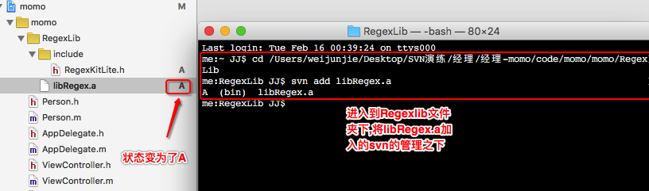
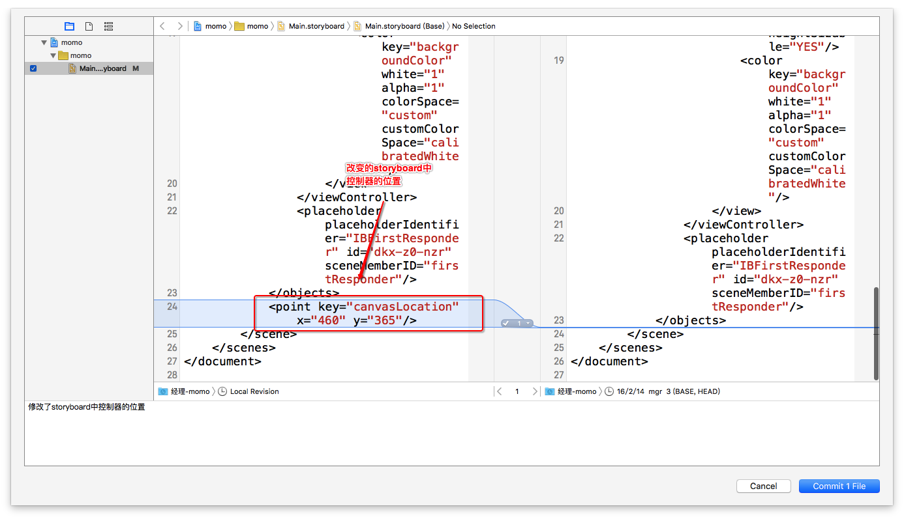
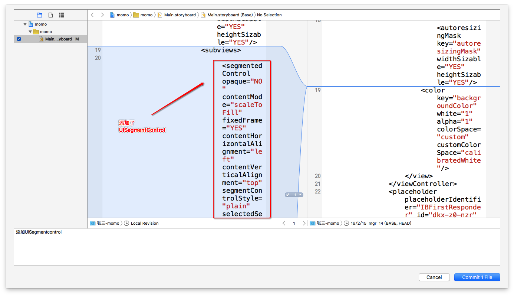
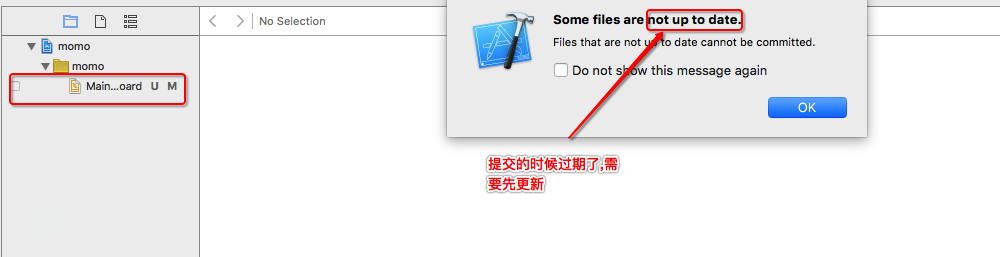
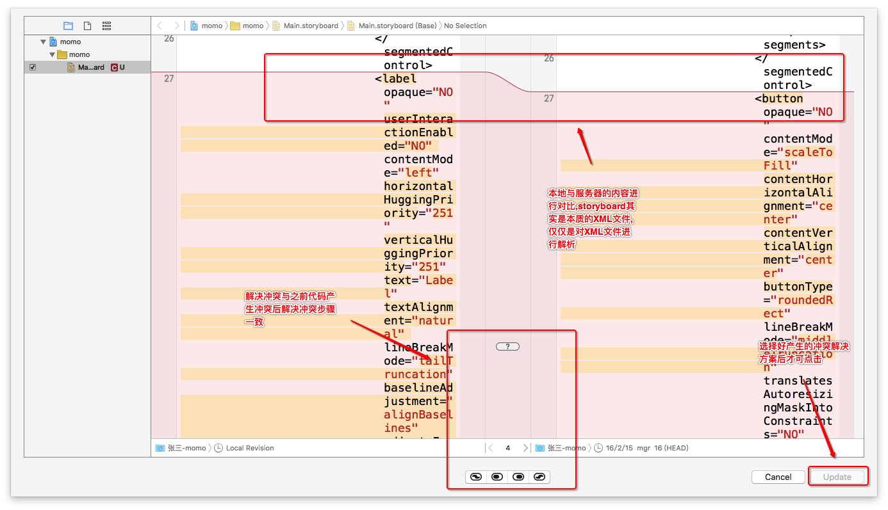
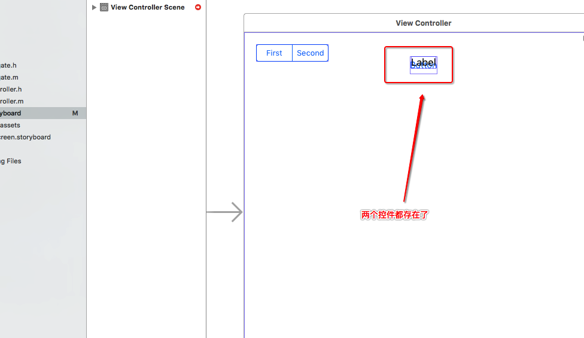

- 一.xcode中使用到静态库
1.经理开发
1.将静态库拖入项目中,发现.a文件为I,表示被忽略了,提交的时候并不会提交该.a文件


2.重新加入到svn管理之下,打开终端,来到静态库目录下,输入命令添加
svn add libRegex
 3.将添加的静态库提交到服务器(source control -> commit)

2.张三开发
张三将服务器最新的代码下载到本地(source control -> update)
- 二.xcode中使用storyboard或者xib
1.经理开发
1.移动storyboard中控制器的位置,之后storyboard出现M表示被修改了

2.提交修改的内容到服务器
2.张三开发
1.张三更新服务器最新内容(source control -> update)
2.张三拖入UISegmentcontrl,改变了storyboard中的内容

3.提交修改的内容到服务器
3.经理开发
1.张三更新服务器最新的内容来(source control -> update)
- 三.xcode中演示storyboard产生冲突(与xib一致)与解决冲突
1.经理开发
1.改变storyboard的内容,在storyboard的控制器中添加UIButton并设置约束

2.将改变提交到服务器

2.张三开发
1.改变storyboard的内容,在storyboard的控制器中添加UILabel,并设置约束,约束与经理添加UIButton的约束一致

2.将改变提交到服务器报not up to date (过期)
 3.更新服务器的代码到本地产生冲突
 4.张三解决冲突,将服务器和本地的内容都保留,并把服务器的放上面,本地的放下面

- 四.解决storyboard打不开的问题
1.张三点击storyboard发现打不开,报一下错误

2.以源码的方式查看storyboard中的内容

3.修改源码中错误的语法

4.之后就可以以IB的形式打开storyboard
5.提交到服务器
6.项目经理更新代码(source control -> update)
- 五.总结
1.在xcode拖入静态库后svn不识别,需要通过命令行添加到svn的管理之下
2.使用storyboard或者xib避免冲突的注意点
1.因为公司都是分模块开发,能用xib的情况下不要用storyboard
2.每次保证只有一个人在修改storyboard,否认多人修改容易引起冲突